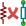

Manual de referencia
Copyright
Este documento está protegido por Copyright © 2010 a 2015 de sus autores, mencionados a continuación. Puede distribuirlo y/o modificarlo bajo los términos de la GNU General Public License (http://www.gnu.org/licenses/gpl.html), versión 3 o posterior, o la Creative Commons Attribution License (http : //creativecommons.org/licenses/by/3.0/), versión 3.0 o posterior.
Todas las marcas mencionadas en esta guía pertenecen a sus legítimos propietarios.
Contribuidores
Jean-Pierre Charras, Fabrizio Tappero, Wayne Stambaugh.
Traducción
Antonio Morales <antonio1010.mr@gmail.com>, 2015
Realimentación
Por favor dirija cualquier reporte de fallo, sugerencia o nuevas versiones a:
-
Acerca de la documentación de KiCad: https://github.com/KiCad/kicad-doc/issues
-
Acerca del software KiCad: https://bugs.launchpad.net/kicad
-
Acerca del software KiCad i18n: https://github.com/KiCad/kicad-i18n/issues
Fecha de publicación y versión del software
Publicado el 22 de Mayo de 2015.
1. Introducción a CvPcb
Cvpcb es una herramienta que le permite asociar los componentes de su esquema con las huellas de los componentes utilizados para trazar la placa de circuito impreso. Esta asociación se añade al archivo de netlist creado por el programa de generación de esquema Eeschema.
El archivo netlist generado por Eeschema especifica qué huella de la placa de circuito impreso está asociada con cada componente en el esquema sólo cuando se inicializa el campo huella dentro del componente.
Este es el caso cuando las huellas de componentes están asociados durante la generación del esquema mediante el establecimiento de campo huella del componente, o ya se encuentra asignado en la biblioteca de símbolos de componentes al cargar el símbolo.
Cvpcb proporciona un método adecuado de asociar huellas a los componentes durante la generación del esquema. Proporciona filtrado de la lista de huellas, visualización de las huellas y visualización del modelo 3D del componentes para ayudar a garantizarle que cada componente tiene asociada la huella correcta.
Los componentes pueden asignarse a sus correspondientes huellas manual o automáticamente mediante la creación de archivos de equivalencia (archivos .equ). Los archivos de equivalencia son tablas de referencia que asocian cada componente con su huella.
Este enfoque interactivo es más simple y menos propenso a errores que asociar directamente las huellas en el editor de esquemas.
Cvpcb le permite ver la lista de las huellas disponibles y mostrarlas en la pantalla para asegurarse de que está asociando la huella correcta.
Puede ejecutarse sólo desde Eeschema, desde la barra de herramientas superior, bien cuando Eeschema se inicia desde el gestor del proyecto en KiCad o cuando Eeschema es ejecutado como una aplicación independiente.
Ejecutar CvPcb desde Eeschema lanzado desde el Administrador de KiCad generalmente es mejor porque:
-
Cvpcb necesita el archivo de configuración del proyecto para conocer que bibliotecas de componentes cargar.
-
Cvpcb inicializa los campos huella de los componentes del proyecto de esquema actual. Esto es posible sólo si el archivo del proyecto se encuentra en la misma ruta que el esquema abierto.
Ejecutando CvPcb desde Eeschema lanzado desde el gestor del proyecto de KiCad asegura automáticamente todo esto.
|
Aviso
|
En realidad puede lanzar CvPcb desde una sesión de Eeschema independiente aunque, pero tenga en cuenta que cualquier esquema abierto que no tenga un archivo de proyecto en la misma ruta puede estar perdiendo componentes dado que las bibliotecas que faltan no se mostrarán en CvPcb. Si no hay ningún archivo fp-lib-table en la misma ruta que el esquema abierto, ninguna biblioteca de componentes específica del proyecto tampoco estará disponible. |
2. Características de CvPcb
2.1. Asociación Manual o Automática
CvPcb permite la asignación interactiva (manual) así como la asignación automática vía archivos equivalentes.
3. Ejecutando CvPcb
CvPcb solo es llamado desde el programa de generación de esquemas Eeschema, por la herramienta:

Eeschema pasa automáticamente los datos correctos a CvPcb (lista de componentes y huellas). No hay que hacer ninguna actualización (salvo que existan nuevos componentes que no hayan sido anotados), simplemente ejecute CvPcb.
4. Comandos de CvPcb
4.1. Ventana Principal
La siguiente imagen muestra la ventana principal de CvPcb.

El panel izquierdo contiene la lista con los nombres de los archivos de bibliotecas de huellas asociados al proyecto disponibles. El panel central contiene la lista de componentes cargados desde el archivo netlist. El panel de la derecha contiene la lista de huellas disponibles cargadas desde las bibliotecas de componentes del proyecto. El panel de componentes estará vacío si ningún archivo netlist se ha cargado y el panel de huellas puede estar también vacío si no se encuentran bibliotecas de componentes.
4.2. Barra de herramientas de la ventana principal

La barra de herramientas superior le permite un fácil acceso a los siguientes comandos:
|
Transfiere la asociación de huellas actual a Eeschema (El contenido de los campos de huellas). |
|
Llama al menú de configuración de CvPcb. |
|
Muestra la huella del componente seleccionado en el panel de huellas. |
|
Selecciona automáticamente el componente previo en la lista sin una huella asociada. |
|
Selecciona automáticamente el componente siguiente en la lista sin una huella asociada. |
|
Asocia automáticamente huellas a los componentes usando un fichero de equivalencias. |
 |
Borra todas las asignaciones de huellas. |
|
Abre el fichero pdf de documentación para la huella seleccionada usando el visor de pdf por defecto. |
|
Habilita o deshabilita el filtrado para limitar la lista de huellas al filtro de huella del componente seleccionado. |
|
Habilita o deshabilita el filtrado para limitar la lista de huellas usando en función del número de pines del componente seleccionado. |
|
Habilita o deshabilita el filtrado para limitar la lista de huellas usando la biblioteca de huellas actualmente seleccionada.. |
4.3. Comandos del teclado para la ventana principal
La siguiente tabla muestra los comandos del teclado para la ventana principal.
Flecha derecha / Tab |
Activa el siguiente panel a la derecha del panel actualmente activado. Rota al primer panel si el último panel se encuentra activo actualmente. |
Flecha Izquierda |
Activa el siguiente panel a la izquierda del panel actualmente activado. Rota al ultimo panel si el primer panel se encuentra activo actualmente. |
Flecha arriba |
Selecciona el elemento anterior dentro de la lista seleccionada. |
Flecha abajo |
Selecciona el siguiente elemento dentro de la lista seleccionada. |
Página Arriba |
Selecciona el elemento una página hacia arriba de la lista seleccionada |
Página Abajo |
Selecciona el elemento una página hacia abajo de la lista seleccionada |
Home |
Selecciona el primer elemento de la lista seleccionada. |
Fin |
Selecciona el último elemento de la lista seleccionada. |
4.4. Configuración de CvPcb

Cvpcb puede cerrarse automáticamente después de guardar el archivo de asociación de huellas, o no.
Seleccionando la entrada “Bibliotecas” dentro del menú “Preferencias” se muestra la ventana de configuración de las bibliotecas.
Dependiendo de la versión CvPcb, hay 2 métodos diferentes para administrar las bibliotecas:
-
La administración de formatos antiguos, usando ficheros *.mod y una lista de bibliotecas de ficheros.
-
El nuevo formato “Pretty”, usando un fichero por huella. Utiliza una lista de carpetas. Cada carpeta (con nombre de la carpeta *.pretty ) es una biblioteca. Al usar este nuevo método de gestión de bibliotecas, también puede utilizar bibliotecas nativas provenientes de GEDA/GPCB o incluso archivos de formato Eagle XML.
5. Gestión de Bibliotecas de Huellas
5.1. Nota importante:
Esta Sección sólo es relevante para las versiones KiCad a partir de diciembre de 2013
5.2. Tablas de Bibliotecas de Huellas
Desde diciembre de 2013, Pcbnew y CvPcb utilizan una nueva herramienta de gestión de bibliotecas basado en tablas de bibliotecas de huellas que permite el uso directo de bibliotecas de componentes desde
-
Bibliotecas de componentes KiCad Antiguas (archivos .MOD)
-
Nuevas bibliotecas de componentes de KiCad .pretty (en el disco local) (carpetas con extensión .pretty, que contienen archivos .kicad_mod)
-
Nuevas bibliotecas de componentes de KiCad .pretty (en nuestro servidor Github, u otro servidor de Github)
-
Bibliotecas GEDA (carpetas que contienen archivos .fp)
-
Bibliotecas de componentes de Eagle
|
Nota
|
|
La siguiente imagen muestra la ventana de edición de las tablas de bibliotecas de huellas que puede abrirse mediante la entrada “Bibliotecas de Huellas” del menú “Preferencias”

La tabla de bibliotecas de huellas se utiliza para asignar una biblioteca de huellas, de cualquiera de los tipos soportado, a un alias. Este alias se utiliza para buscar las huellas en lugar del método anterior, que dependía de la ruta para la búsqueda de las bibliotecas.
Esto permite a CvPcb acceder a huellas con el mismo nombre en diferentes bibliotecas, asegurando que la huella correcta se carga desde la biblioteca adecuada. También permite a CvPcb soportar la carga desde bibliotecas de diferentes editores de PCB como Eagle y GEDA.
5.2.1. Tabla de Bibliotecas de Huellas Global
La tabla de bibliotecas de huellas global contiene la lista de las bibliotecas que están siempre disponibles sin importar que archivo de proyecto este cargado en ese momento. La tabla se guarda en el fichero fp-lib-table en la carpeta de instalación de KiCad. La ubicación de esta carpeta es dependiente del sistema operativo utilizado.
5.2.2. Tabla de bibliotecas de huellas especifica del proyecto
La tabla de bibliotecas de huellas especifica del proyecto contiene la lista de las bibliotecas que están disponibles específicamente para el archivo de proyecto cargado en ese momento. La tabla de bibliotecas de huellas especifica del proyecto sólo puede editarse cuando se carga junto con el archivo netlist proyecto. Si no hay ningún archivo de proyecto cargado o no hay ningún archivo de tabla de la bibliotecas de huellas en la ruta del proyecto, se crea una tabla vacía que puede ser editada y guardada más tarde junto con el archivo de asignación de huellas.
5.2.3. Configuración Inicial
La primera vez Pcbnew o CvPcb se ejecuta y no se encuentra la tabla global de huellas fp-lib-table en la carpeta de inicio del usuario, Pcbnew o CvPcb intentarán copiar el archivo de la tabla de huellas predeterminado fp-lib-table almacenado en el carpeta de plantillas de KiCad al archivo fp-lib-table en la carpeta de inicio del usuario.
Si fp-lib-table no se puede encontrar, una tabla de bibliotecas de huellas vacía se creará en la carpeta de inicio del usuario. Si esto ocurre, el usuario puede copiar fp-lib-table manualmente o configurar la tabla a mano.
La tabla de bibliotecas de huellas predeterminada incluye muchas de las bibliotecas de huellas estándar que se instalan como parte de KiCad.
Obviamente, la primera cosa a realizar es modificar esta tabla (añadiendo/eliminando entradas) de acuerdo a sus requisitos y las bibliotecas que necesite para todos sus proyectos.
(La carga de demasiadas bibliotecas consume tiempo)
5.2.4. Añadiendo Entradas a la Tabla
Para utilizar una biblioteca de huellas, primero debe agregarse a la tabla, ya sea a la global o a la específica del proyecto. La tabla específica de proyecto sólo es aplicable cuando esta abierto un fichero netlist.
Cada biblioteca debe tener un alias único.
Éste no tiene por que estar relacionado en modo alguno con el nombre de archivo de la biblioteca o su ruta. El carácter dos puntos : no se puede utilizar en cualquier lugar del alias. Cada entrada de la biblioteca debe tener una ruta válida y/o nombre de archivo dependiendo del tipo de biblioteca. Las rutas pueden ser definidos como absolutas, relativas o por sustitución de variable del entorno (véase la sección siguiente).
El tipo de biblioteca adecuado debe seleccionarse para que la biblioteca pueda ser leída correctamente. KiCad soporta actualmente la lectura de formatos KiCad Antigua, bibliotecas de componentes KiCad Pretty, Eagle y GEDA.
También hay un campo descripción para agregar una descripción de la entrada de la biblioteca. El campo opción no se utiliza en este momento por lo que la adición de opciones no tendrá efecto cuando cargue las bibliotecas.
Tenga en cuenta que no puede tener alias de biblioteca duplicados en la misma tabla. Sin embargo, puede tener un alias de biblioteca concreto tanto en la tabla de bibliotecas global como en la especifica del proyecto. La entrada de la tabla específica de proyecto tendrá prioridad sobre la entrada de la tabla global cuando existan nombres duplicados. Cuando las entradas se definen en la tabla específica del proyecto, un archivo fp-lib-table conteniendo estas entradas se guardará en la carpeta del fichero netlist abierto actualmente.
5.2.5. Sustitución de Variables del Entorno
Una de las características más potentes de las tablas de bibliotecas de huellas es la sustitución de variables del entorno. Esto le permite definir rutas personalizadas, donde se almacenan sus bibliotecas, en variables del entorno. La sustitución de las variables del entorno se consigue mediante la sintaxis ${ENV_VAR_NAME} en la ruta de la biblioteca de huellas.
Por defecto, en tiempo de ejecución KiCad define dos variables del entorno:
-
La variable del entorno KIPRJMOD. Ésta apunta siempre el directorio actual del proyecto y no se puede modificar.
-
La variable del entorno KISYSMOD. Que apunta a donde se encuentran instaladas las librerías de componentes por defecto que se instalaron con KiCad.
Puede anular KISYSMOD definiendo usted mismo, en preferencias/Configurar Rutas, la ruta que apunta a sus propias bibliotecas en lugar de las bibliotecas por defecto de KiCad
Cuando se carga un archivo netlist, CvPcb define KIPRJMOD utilizando la ruta del archivo (la ruta del proyecto).
Pcbnew también define esta variable del entorno al cargar un archivo de placa.
Esto le permite almacenar las bibliotecas en la ruta del proyecto sin tener que definir la ruta absoluta (lo que no siempre es conocida) a la biblioteca en la tabla de bibliotecas de huellas especificas del proyecto.
5.2.6. Usando el Plugin para GitHub
El de GitHub es un plugin especial que proporciona una interfaz para acceso de sólo lectura a un repositorio GitHub remoto consistente en un directorio .pretty (Pretty es el nombre del formato de archivo de huellas para KiCad) de huellas, y opcionalmente proporciona soporte para “Copiar Al Escribir” (CAE) huellas leídas desde el repositorio de GitHub y guardarlas localmente. Por tanto, el plugin para “Git Hub” es para acceso de sólo lectura a bibliotecas de componentes remotas tipo Pretty en https://github.com. Para agregar una entrada de GitHub a la tabla de bibliotecas de huellas la “Ruta de las Bibliotecas” en la fila de la tabla de bibliotecas de huellas debe ajustarse a una URL de GitHub válida.
Por ejemplo:
o
Por lo general las URLs de GitHub tienen la forma:
El “Tipo de Plugin” se debe ajustarse a “Github”. Para habilitar la caracteristica de “Copiar Al Escribir” la opción allow_pretty_writing_to_this_dir se debe agregarse a los ajustes de “opciones” de la entrada en la tabla bibliotecas de huellas. Esta opción es la “ruta de la biblioteca” para el almacenamiento local de las copias modificadas de las huellas leídas desde el repositorio GitHub. Las huellas guardadas en esta ruta se combinan con las de solo lectura del repositorio de GitHub para crear la biblioteca de huella. Si esta opción no se especifica, entonces la biblioteca GitHub es de sólo lectura. Si la opción está presente para una biblioteca GitHub, entonces cualquier escritura en esta biblioteca híbrida irá al directorio *.pretty locale. Tenga en cuenta que la parte residente en github.com de esta biblioteca híbrida es siempre de sólo lectura, lo que significa que no se puede borrar nada ni modificar ninguna huella en el repositorio de GitHub especificado directamente. El tipo de biblioteca agregada sigue siendo de tipo “Github” a todos los efectos, pero consiste en una parte local de lectura/escritura y una remota de solo lestura.
La siguiente tabla muestra una entrada de la tabla de bibliotecas de huellas sin la opción allow_pretty_writing_to_this_dir:
| Nickname | Library Path | Plugin Type | Options | Descript. |
|---|---|---|---|---|
github |
Github |
Liftoff’s GH footprints |
La siguiente tabla muestra una entrada de tabla bibliotecas de huellas con la opción CAE especificada. Observe el uso de la variable del entorno ${HOME} sólo como ejemplo. El directorio github.pretty es alojado en la ruta ${HOME}/pretty/. Cada vez que utilice la opción allow_pretty_writing_to_this_dir, tendrá que crear ese directorio manualmente con antelación y éste debe terminar con la extensión .pretty.
| Nickname | Library Path | Plugin Type | Options | Descript. |
|---|---|---|---|---|
github |
Github |
allow_pretty_writing_to_this_dir= ${HOME}/pretty/github.pretty |
Liftoff’s GH footprints |
La carga de huellas siempre dará prioridad a las huellas locales que se encuentran en la ruta dada por la opción allow_pretty_writing_to_this_dir. Una vez que haya guardado una huella al directorio local de la biblioteca CAE guardando una huella desde el editor de huellas, no se actualizaran las modificaciones de ésta en el repositorio de GitHub si existe una huella con el mismo nombre en la copia local.
Mantenga siempre un directorio *.pretty local distinto para cada biblioteca de GitHub, nunca los combine referenciandolos al mismo directorio local mas de una vez.
Además, no utilice el mismo directorio CAE (*.pretty) en una entrada de la tabla bibliotecas de huellas. Esto probablemente crearía un desastre.
El valor de la opción allow_pretty_writing_to_this_dir ampliará cualquier variable del entorno usando la notación ${} para crear la ruta de acceso de la misma manera que en el ajuste de la “Ruta de la biblioteca”.
¿Cuál es el interés de CAE? El de acelerar el intercambio de huellas.
Si envía por correo electrónico periódicamente modificaciones en las huellas .pretty CAE al mantenedor del repositorio en GitHub, puede ayudar a actualizar la copia en GitHub. Envíe simplemente por correo electrónico los archivos *.kicad_mod individuales que se encuentran en sus directorios CAE al mantenedor del repositorio GitHub. Después de haber recibido la confirmación de que se han fusionado los cambios, puede eliminar el archivo CAE y la huella actualizada de la parte de solo lectura de la biblioteca de GitHub se descargará y actualizará. El objetivo debe ser mantener el conjunto de archivos CAE lo más pequeño posible, contribuyendo con frecuencia a las copias principales compartidas en https://github.com.
5.2.7. Uso de Patrones
Las bibliotecas de huellas se pueden definir tanto globalmente como específicamente para el proyecto cargado en ese momento. Librerías de componentes definidos en la tabla global del usuario están siempre disponibles y se almacenan en el archivo fp-lib-table en la carpeta de inicio del usuario.
Las bibliotecas de huellas globales siempre son accesibles incluso cuando no hay ningún archivo netlist abierto.
La tabla de huellas especificas del proyecto está activa sólo para el archivo netlist abierto en ese momento.
La tabla de bibliotecas de huellas específica del proyecto se guarda en el archivo fp-lib-table en la ruta del archivo netlist abierto actualmente. Usted es libre de definir las bibliotecas en cualquier tabla.
Existen ventajas y desventajas de cada método. Puede definir todas sus bibliotecas en la tabla global de lo que significa que siempre estarán disponibles cuando las necesite. La desventaja de esto es que puede tener que buscar a través de una gran cantidad de bibliotecas para encontrar la huella que busca. Puede definir todas las bibliotecas de forma específica para proyecto.
La ventaja de esto es que usted sólo tendrá que definir las bibliotecas que realmente necesita para el proyecto lo que reduce la búsquedas posteriores.
La desventaja es que siempre tiene que recordar agregar cada biblioteca de huellas que necesite para cada proyecto. También puede definir bibliotecas de huellas tanto global como para el proyecto concreto.
Un patrón de uso sería definir las bibliotecas más utilizados a nivel global y la bibliotecas que sólo se requieran para el proyecto en la tabla de bibliotecas específica del proyecto. No existe ninguna restricción sobre cómo definir sus bibliotecas.
5.3. Usando el Asistente para Tablas de Huellas
Un asistente para agregar bibliotecas de huellas a la tabla de huellas está disponible en la Ventana de edición de tablas de huellas.
Tenga en cuenta también que las bibliotecas pueden ser de cualquier tipo de biblioteca de huellas soportado por KiCad.
Se puede añadir bibliotecas “locales” o bibliotecas de un repositorio de Github.
Cuando las bibliotecas están en un repositorio de Github, pueden ser añadidas como bibliotecas remotas, o descargadas y añadidas como bibliotecas locales.
Aquí se muestra, la opción de bibliotecas locales seleccionada.

Aquí, se selecciona la opción bibliotecas remotas.

Dependiendo de la opción seleccionada, una de estas páginas se mostrará, para seleccionar una lista de bibliotecas:
En este caso, se ha seleccionado la opción de bibliotecas locales.

Aquí, se seleccionó la opción de bibliotecas remotas.

Después de seleccionar un conjunto de bibliotecas, la página siguiente valida la elección:

Si algunas bibliotecas seleccionadas es incorrecta (no admitida, no es una biblioteca de huellas …) será marcada como “no válida”.
La última opción es la tabla de la bibliotecas de huellas a la que incorporar las nuevas bibliotecas:
-
La tabla goblal
-
La tabla local (tabla especifica del proyecto)

6. Visualización de la Huella actual
6.1. El comando ver huella
El comando ver huella muestra la huella seleccionada actualmente en la ventana de lista de huellas. Se puede mostrar un modelo 3D del componente si este ha sido creado y asignado a la huella. A continuación se muestra la ventana del visor de huellas.

6.1.1. Información de la barra de estado
La barra de estado se encuentra en la parte inferior de la ventana principal de CvPcb y proporciona información útil para el usuario. La siguiente tabla define los contenidos de cada panel en la barra de estado.
Left |
Component count: total, unassigned |
Middle |
Filter list of the selected component |
Right |
Filtering mode and count of available footprints |
6.1.2. Atajos del teclado
F1 |
Acercar vista |
F2 |
Alejar vista |
F3 |
Refrescar vista |
F4 |
Centra la vista actual en la posición del puntero del raton |
Home |
Ajusta la vista para encajar la huella en la vista actual |
Barra Espaciadora |
Ajusta la posición actual del ratón como el punto inicial de las coordenadas relativas |
Flecha Derecha |
Mueve el cursor una posición a la derecha sobre la rejilla |
Flecha Izquierda |
Mueve el cursor una posición a la izquierda sobre la rejilla |
Flecha Arriba |
Mueve el cursor una posición hacia arriba sobre la rejilla |
Flecha Abajo |
Mueve el cursor una posición hacia la derecha sobre la rejilla |
6.1.3. Acciones del ratón
Rueda del ratón |
Amplia o aleja la vista sobre la posición del puntero del ratón |
Ctrl + Rueda del ratón |
Desplaza a derecha e izquierda |
Shift + Rueda del ratón |
Desplaza arriba y abajo |
Clic Derecho |
Abre el menú contextual |
6.1.4. Menú Contextual
Se muestra haciendo clic derecho con el ratón:

Selección del Zoom (Select Zoom) |
Selecciona directamente el nivel de zoom entre varios valores. |
Selección de la rejilla (Grid Select) |
Selecciona directamente el paso de la rejilla entre varios valores. |
6.1.5. Barra de herramientas Horizontal
|
Muestra la ventana de opciones de visualización |
|
Aproxima la vista |
|
Aleja la vista |
|
Refresca la vista |
|
Ajusta la vista para encajar la huella en la ventana |
|
Abre el visor de modelos 3D |
6.1.6. Barra de herramientas vertical
|
Muestra u oculta la rejilla |
|
Muestra las coordenadas en notación polar o cartesiana |
|
Muestra las coordenadas en pulgadas |
|
Muestra las coordenadas en milímetros |
|
Conmuta el estilo del puntero |
|
Conmuta la visualización de los pads entre modo boceto y modo normal |
|
Conmuta la visualización del texto entre modo boceto y modo normal |
|
Conmuta la visualización de los bordes entre modo boceto y modo normal |
6.2. Visualizando el modelo 3D actual

6.2.1. Acciones del ratón
Rueda del ratón |
Amplia o aleja la vista sobre la posición del puntero del ratón |
Ctrl + Rueda del ratón |
Desplaza a derecha e izquierda |
Shift + Rueda del ratón |
Desplaza arriba y abajo |
6.2.2. Barra de herramientas Horizontal
|
Recarga en modelo 3D |
|
Copia la vista 3D al portapapeles |
|
Ajusta las opciones del visor 3D |
|
Acerca la vista |
|
Aleja la vista |
|
Refresca la vista |
|
Ajusta la vista para encajar la huella en la ventana |
|
Rotar hacia atrás sobre el eje X |
|
Rotar hacia adelante sobre el eje X |
|
Rotar hacia atrás sobre el eje Y |
|
Rotar hacia adelante sobre el eje Y |
|
Rotar hacia atrás sobre el eje Z |
|
Rotar hacia adelante sobre el eje Z |
|
Desplazar a la izquierda |
|
Desplazar a la derecha |
|
Desplazar hacia arriba |
|
Desplazar hacia abajo |
|
Activa/desactiva el modo de proyección ortográfica |
7. Usando CvPcb para asociar componentes con huellas
7.1. Asociación manual de huellas a componentes
Para asociar manualmente una huella con un componente primero seleccione un componente en el panel de componentes. A continuación, seleccione una huella en el panel de huellas haciendo doble clic con el botón izquierdo del ratón sobre el nombre de la huella deseada. El siguiente componente no asignado en la lista de componentes se selecciona automáticamente. Para cambiar la huella de un componente actúe de la misma manera.
7.2. Filtrando la lista de huellas
Cuando selecciona un componente y/o biblioteca y una o más de las opciones de filtrado están activas, la lista de huellas mostrada en CvPcb se filtra en consecuencia.
Los iconos


 habilita y deshabilitan las
características de filtrado. Cuando el filtrado no está activo, se muestra
la lista de huella completa.
habilita y deshabilitan las
características de filtrado. Cuando el filtrado no está activo, se muestra
la lista de huella completa.
Sin filtrado:

Filtrado por lista de filtros de huella asignados al componente seleccionado. Los filtros de componentes se indican en el panel central de la barra de estado en la parte inferior de la ventana principal.
Filtrada por el filtro de huella del componente seleccionado:

En el editor de bibliotecas de componentes en Eeschema, se creó la lista de huellas utilizando la pestaña filtro de huella de la ventana de propiedades del componente como se muestra a continuación.

Filtrado por el número de pines del componente seleccionado:

Filtrado por la biblioteca seleccionada.

Los filtros se pueden combinar para formar un filtrado más complejo y ayudar a reducir el número de huellas en el panel de huellas.
Filtrado por el número de pines del componente seleccionado y el filtro de componente:

8. Asociación Automática
8.1. Ficheros de equivalencia
Archivos de equivalencia permiten la asignación automática de huellas a los componentes.
Estos contienen una lista con el nombre de la huella correspondiente de acuerdo con el nombre (campo valor) del componente. Estos archivos suelen tener la extensión de archivo .equ.
Son archivos de texto plano y pueden ser editadas usando cualquier editor de texto plano. Deben ser creados por el usuario.
8.2. Formatos de los Archivos de Equivalencia
Los archivos de equivalencia consisten en una línea por cada componente. Cada línea tiene la siguiente estructura:
‘valor del componente’ ‘nombre de huella’
Cada nombre debe ser único marcado con el carácter ' y los nombres de los componentes y de la huella debe estar separados por uno o más espacios.
Ejemplo:
Si el componente U3 es circuito 14011 y su huella es 14DIP300, la línea es:
‘14011’ ‘14DIP300’
Cualquier línea que comience por # es un comentario.
Aquí se muestra un ejemplo de archivo de equivalencia:
#integrated circuits (smd): '74LV14' 'SO14E' '74HCT541M' 'SO20L' 'EL7242C' 'SO8E' 'DS1302N' 'SO8E' 'XRC3064' 'VQFP44' 'LM324N' 'S014E' 'LT3430' 'SSOP17' 'LM358' 'SO8E' 'LTC1878' 'MSOP8' '24LC512I/SM' 'SO8E' 'LM2903M' 'SO8E' 'LT1129_SO8' 'SO8E' 'LT1129CS8-3.3' 'SO8E' 'LT1129CS8' 'SO8E' 'LM358M' 'SO8E' 'TL7702BID' 'SO8E' 'TL7702BCD' 'SO8E' 'U2270B' 'SO16E' #Xilinx 'XC3S400PQ208' 'PQFP208' 'XCR3128-VQ100' 'VQFP100' 'XCF08P' 'BGA48' #upro 'MCF5213-LQFP100' 'VQFP100' #regulators 'LP2985LV' 'SOT23-5'
8.3. Asociación Automática de huellas a componentes
Haga clic en el botón de asociación automática de huellas en la barra de herramientas superior para procesar un archivo de equivalencia.
Todos los componentes que tengan por su valor en la fichero de equivalencia seleccionado (*.equ) tendrán su huella automáticamente asignada.